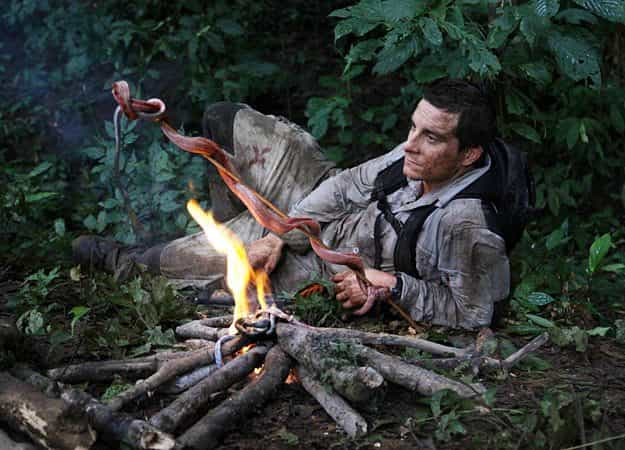

In a previous article, I discussed five activities that are often overlooked by men claiming to be “masculine”. There are many more. In this article I will be providing five more activities that every aspiring or self-proclaimed masculine man should should engage in.
1. Public speaking

For some of you, this one is a given. Too many guys are afraid to talk in public or in front of large groups of people, myself included. However this is such an important skill to have, and if you are no longer in school and required to do regular orals, it can be difficult to practice this skill.
Public speaking is one of the requirements of all great leaders in history—politicians, commanders, visionaries… the list goes on. Neglecting this fundamental skill would be suicide for all aspiring alphas, as it is the only way to effectively demonstrate your power by a show of confidence, body language, calmness under pressure, and of course, intelligence and wit.
People like to see that even famous “non-vocal” celebrities like writers, athletes, etc. are able to actually talk to a crowd in an engaging manner, as it can enhance their respect for them. I chose “non-vocal” celebrities specifically because unlike actors, singers, or TV show hosts, they are not required to constantly be speaking or using their voice in front of crowds.
2. Outdoor Survival

In today’s increasingly urbanized society, what need does the modern man have for survival skills? Many ROK writers have already covered this topic, so I’ll just rehash the most important reasons to have this skill. If the shit hits the fan, you want to know you are capable of reacting efficiently. You want to have a plan of action, but be able to improvise where necessary.
Therefore you need to know at least the basics of survival, such as starting a fire with minimal materials, how to filter and disinfect water, where and how to obtain food, how to build a shelter, etc. Most of these skills are taught in the Boy Scouts, however if you are too old to join (18+) then there are alternatives.
The military is an option, but not the only one. There are many survival “schools” that actually offer various survival training courses to both the military and public, in bushcraft, self-defense, firearms training, hunting, CPR, and much more.
3. Tutoring/Coaching
Another important skill for masculine men is to be able to impart their knowledge on to others who they feel deserve to know. Tutoring is also a great way to earn some part time cash on the side if you are well-versed in academic subjects such as mathematics, but also artistic subjects such as music.
If you are especially good at a sport, you could become a coach or personal trainer if you get the qualifications for it, which would be well worth the money considering you’re essentially killing two (or three?) birds with one stone: remaining fit and healthy, earning money, and gaining respect and followers by imparting knowledge to help others.
4. Music
Sure, many people mess have messed around with instruments when they were younger and you probably know people who can play some piano, guitar or any other popular instrument. But how many guys do you know that are REALLY GOOD at playing those musical instruments? I’m guessing not many.
Not just listening to music, but actually being able to play a musical instrument(s) is an important skill for a masculine man to have. If you already have game, this can benefit you immensely. You essentially have the ability to influence people’s emotions, at your fingertips, as that is what music does. Now think of how you can use that to: attract women into your circle, impress or intimidate fellow males; and even just have fun by yourself, exercising your creativity muscles. It’s a no-brainer.
If you don’t know how to play an instrument yet, start taking lessons as soon as possible and stick with it. Learn basic music theory and how to read music, and try to develop your listening skills as well.
5. Singing
I know what you’re thinking. Singing? A masculine activity? You can’t be serious, Johan. Well, actually I am. And before you think I’m just another leftist spy, hear me out. Think of all the famous male singers you can think of. Okay, now ask yourself, who are their biggest fans the majority of the time? That’s right, in most cases, it’s women.
Women love men who can sing, sometimes even if they are homosexual or feminine (think Queen or Prince or, more recently, Justin Bieber). More masculine singers include Frank Sinatra, Kris Kristofferson, Elvis Presley, Johnny Cash and Bruce Springsteen, to name a few. Singing could be seen as a combination of public speaking and musical talent. Although not the exact same as public speaking, it still involves similar usage of the voice and vocal cords, and the voice is a very powerful medium of communication. Combine this with a musical instrument as stated in point #4, or even dancing skill as I mentioned in the previous article.
Conclusion
Regardless of whether you choose to pursue all of the above activities or just a select few, they will surely help to improve your life in one way or another, and make you a more attractive and capable man. So I urge you: go forth and conquer, my fellow lads and gentlemen. The more skill-sets under your belt, the more the world opens up to you. Fear is an obstacle in your progress and if you fear improving yourself then you will never reach your desired destination.
Read More: 5 Underappreciated Activities Every Man Should Engage In